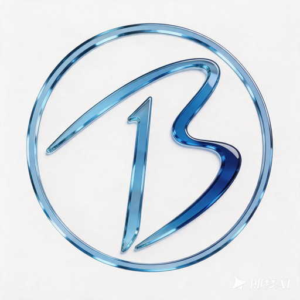

24H 行情雷达
实时跟踪 BTC 价格波动、资金费率、市场情绪与清算风险，帮助用户快速发现关键异动。
查看行情雷达→
比特司令 BTC GENERAL 加入社区GATE REBATE MATRIX
BTC General 专注 Gate 交易所返佣服务，根据用户等级提供阶梯式返佣比例。等级越高，返佣越高，A7 用户可享 70% 返佣，A8-A9 用户最高可享 75% 返佣。
| 交易平台 | A1-A4 | A5 | A6 | A7 | A8-A9 |
|---|---|---|---|---|---|
| Gate | 50% | 55% | 60% | 70% | 75% |
GATE SAVINGS MODEL
以 Gate 用户每月产生的交易手续费为例，普通渠道通常返佣较低，而 BTC General 根据用户等级提供 50%-75% 阶梯返佣。等级越高，返佣比例越高，长期交易可节省更多手续费成本。
| 月手续费 | 普通渠道 20% | A1-A4 50% | A5 55% | A6 60% | A7 70% | A8-A9 75% | 最多多拿 |
|---|---|---|---|---|---|---|---|
| 500 USDT | 100 | 250 | 275 | 300 | 350 | 375 | +275 USDT |
| 1,000 USDT | 200 | 500 | 550 | 600 | 700 | 750 | +550 USDT |
| 3,000 USDT | 600 | 1,500 | 1,650 | 1,800 | 2,100 | 2,250 | +1,650 USDT |
| 5,000 USDT | 1,000 | 2,500 | 2,750 | 3,000 | 3,500 | 3,750 | +2,750 USDT |
对于高频交易用户来说，返佣比例的差距会直接影响长期交易成本。通过 BTC General 绑定 Gate 专属返佣通道，可享 50%-75% 阶梯返佣，交易越多，节省越明显。
COMMERCIAL TOOLKIT
围绕 BTC GENERAL 社区的核心服务能力，提供行情监控、专业研判与套利量化支持，让用户获得更清晰的市场信号和更高效的交易辅助工具。